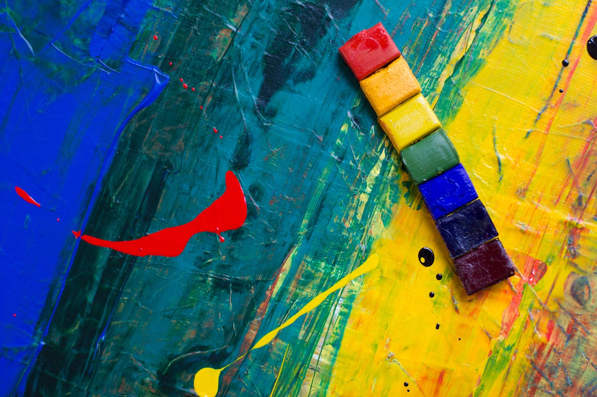

Scelta 2.2.2.1.2.3: Parla a Fabrix Schwarzenegger
Cristian decide di parlare con Fabrix: discutono sul loro continuo a combattere e allora Fabrix confessa di aver dei sentimenti per Cristian. Cristian però gli dice che non corrisponde il suo amore e allora Schwarzenegger si suicida. Cristian prende il trono ma si sente in colpa per la fine di Fabrix e muore molto vecchio e triste e solo
FINE : 4 PUNTI
